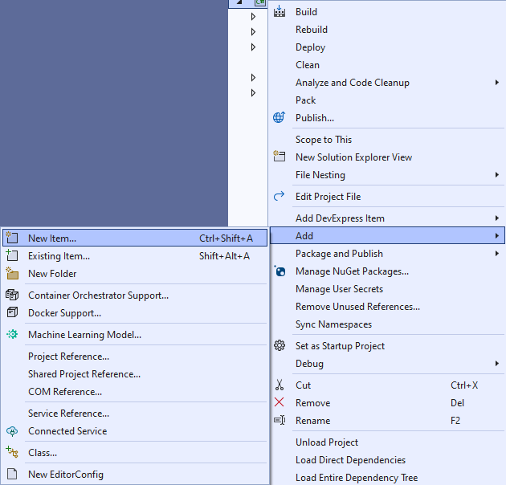

Lucky Roulette
Learn creating a Lucky Roulette game using Windows App SDK with this Tutorial
Lucky Roulette shows how you can generate a randomised roulette wheel-based game and pick numbers with a control from NuGet using the Windows App SDK.
Step 1
Follow Setup and Start on how to get Setup and Install what you need for Visual Studio 2022 and Windows App SDK.


Step 2
Then in Visual Studio within Solution Explorer for the Solution, right click on the Project shown below the Solution and then select Manage NuGet Packages...

Step 3
Then in the NuGet Package Manager from the Browse tab search for Comentsys.Toolkit.WindowsAppSdk and then select Comentsys.Toolkit.WindowsAppSdk by Comentsys as indicated and select Install

This will add the package for Comentsys.Toolkit.WindowsAppSdk to your Project. If you get the Preview Changes screen saying Visual Studio is about to make changes to this solution. Click OK to proceed with the changes listed below. You can read the message and then select OK to Install the package, then you can close the tab for Nuget: LuckyRoulette by selecting the x next to it.
Step 4
Then in Visual Studio within Solution Explorer for the Solution, right click on the Project shown below the Solution and then select Add then New Item…

Step 5
Then in Add New Item from the C# Items list, select Code and then select Code File from the list next to this, then type in the name of Library.cs and then Click on Add.
Step 6
You will now be in the View for the Code of Library.cs, within this type the following Code:
using Comentsys.Toolkit.WindowsAppSdk;
using Microsoft.UI;
using Microsoft.UI.Xaml;
using Microsoft.UI.Xaml.Controls;
using Microsoft.UI.Xaml.Input;
using Microsoft.UI.Xaml.Media;
using Microsoft.UI.Xaml.Shapes;
using System;
using System.Collections.Generic;
using System.Linq;
using Windows.Foundation;
using Windows.UI;
public class Library
{
private const string title = "Lucky Roulette";
private const int size = 400;
private const int rim = 50;
private static readonly int[] _wheel =
{
0, 32, 15, 19, 4, 21, 2, 25, 17,
34, 6, 27, 13, 36, 11, 30, 8, 23,
10, 5, 24, 16, 33, 1, 20, 14, 31,
9, 22, 18, 29, 7, 28, 12, 35, 3, 26
};
private readonly List<int> _values =
Enumerable.Range(0, _wheel.Length).ToList();
private readonly Random _random = new((int)DateTime.UtcNow.Ticks);
private int _spins = 0;
private int _spinValue = 0;
private int _pickValue = 0;
private Dialog _dialog;
private StackPanel _panel = new();
private bool IsOdd(int value) =>
value % 2 != 0;
// Style & Pocket
// Wheel
// Ball, Pick & Square
// Layout & New
}
The Class that has been defined in so far Library.cs has using for the package of Comentsys.Toolkit.WindowsAppSdk amongst others.
It also has the numbers for the roulette wheel and defines a Method to see if a number is odd with IsOdd.
Step 7
While still in the Class for Library.cs and after the Comment of // Style & Pocket type in the following
Methods for Style for the colours used for roulette and for the Pocket of a roulette wheel.
private Color Style(int value) =>
value switch
{
>= 1 and <= 10 or >= 19 and <= 28 => IsOdd(value) ?
Colors.Black : Colors.DarkRed,
>= 11 and <= 18 or >= 29 and <= 36 => IsOdd(value) ?
Colors.DarkRed : Colors.Black,
0 => Colors.DarkGreen,
_ => Colors.Transparent,
};
private Grid Pocket(int value)
{
Color fill = Style(value);
Grid grid = new()
{
Width = size,
Height = size
};
Grid pocket = new()
{
Width = 26,
Height = rim,
CornerRadius = new CornerRadius(4),
Background = new SolidColorBrush(fill),
VerticalAlignment = VerticalAlignment.Top
};
TextBlock text = new()
{
FontSize = 20,
Text = $"{value}",
VerticalAlignment = VerticalAlignment.Top,
Foreground = new SolidColorBrush(Colors.Gold),
HorizontalAlignment = HorizontalAlignment.Center
};
Ellipse ball = new()
{
Width = 20,
Height = 20,
Opacity = 0,
Name = $"ball{value}",
Margin = new Thickness(0, 0, 0, 4),
Fill = new SolidColorBrush(Colors.Snow),
VerticalAlignment = VerticalAlignment.Bottom
};
pocket.Children.Add(text);
pocket.Children.Add(ball);
grid.Children.Add(pocket);
return grid;
}
Step 8
While still in the Class for Library.cs after the Comment of // Wheel type in the following Method:
private Canvas Wheel()
{
Canvas canvas = new()
{
Width = size,
Height = size,
Margin = new Thickness(5)
};
Ellipse ellipse = new()
{
Width = size,
Height = size,
StrokeThickness = rim,
Stroke = new SolidColorBrush(Colors.Peru)
};
canvas.Children.Add(ellipse);
int index = 0;
double radiusX = canvas.Width * 0.5;
double radiusY = canvas.Height * 0.5;
double delta = 2 * Math.PI / _wheel.Length;
Point centre = new(canvas.Width / 2, canvas.Height / 2);
foreach (int value in _wheel)
{
Grid pocket = Pocket(value);
Size size = new(pocket.DesiredSize.Width, pocket.DesiredSize.Height);
double angle = index * delta;
double x = centre.X + radiusX *
Math.Cos(angle) - size.Width / 2;
double y = centre.Y + radiusY *
Math.Sin(angle) - size.Height / 2;
pocket.RenderTransformOrigin = new Point(0.5, 0.5);
pocket.RenderTransform = new RotateTransform()
{
Angle = angle * 180 / Math.PI
};
pocket.Arrange(new Rect(x, y, size.Width, size.Height));
canvas.Children.Add(pocket);
index++;
}
return canvas;
}
This Method will create the look-and-feel of a roulette wheel by use Pocket to create each pocket of the
roulette wheel which are positioned in a circle around the Canvas.
Step 9
While still in the Class for Library.cs after the Comment of // Ball, Pick & Square type the following Methods:
private void Ball(int value, int opacity)
{
UIElement element = (UIElement)_panel.FindName($"ball{value}");
if (element != null) element.Opacity = opacity;
}
private void Pick(int value, Color fill)
{
Piece piece = (Piece)_panel.FindName($"pick{value}");
if (piece != null) piece.Stroke = new SolidColorBrush(fill);
}
private void Square(ref Grid grid, int row, int column, int value)
{
var piece = new Piece()
{
IsSquare = true,
Value = $"{value}",
Name = $"pick{value}",
Fill = new SolidColorBrush(Style(value)),
Stroke = new SolidColorBrush(Style(value)),
Foreground = new SolidColorBrush(Colors.Gold)
};
piece.Tapped += (object sender, TappedRoutedEventArgs e) =>
{
Ball(_spinValue, 0);
Pick(_pickValue, Style(_pickValue));
_spins++;
_spinValue = _values[_random.Next(0, _values.Count)];
_pickValue = int.Parse(((Piece)sender).Value);
Ball(_spinValue, 1);
Pick(_pickValue, Colors.Peru);
// Check Win
if (_spinValue == _pickValue)
{
_spins = 0;
_dialog.Show($"Won {_spins} with {_spinValue}");
}
else
{
_dialog.Show($"Lost {_spins} with {_pickValue} was {_spinValue}");
}
};
piece.SetValue(Grid.RowProperty, row);
piece.SetValue(Grid.ColumnProperty, column);
grid.Children.Add(piece);
}
These Methods will be used for the ball of the roulette wheel with Ball and for selecting which number will be selected with Pick and Square which will represent the numbers that can be selected.
Step 10
While still in the Class for Library.cs after the Comment of // Layout & New type in the following Methods:
private Grid Layout()
{
int count = 1;
int rows = 13;
int columns = 3;
Grid grid = new()
{
Height = size,
Margin = new Thickness(5)
};
for (int index = 0; index < rows; index++)
{
grid.RowDefinitions.Add(new RowDefinition());
grid.ColumnDefinitions.Add(new ColumnDefinition());
}
var numbers = _wheel.OrderBy(o => o).ToArray();
Square(ref grid, 0, 1, numbers[0]);
for (int row = 1; row < rows; row++)
{
for (int column = 0; column < columns; column++)
{
Square(ref grid, row, column, numbers[count]);
count++;
}
}
return grid;
}
public void New(StackPanel panel)
{
_spins = 0;
_panel = panel;
_panel.Children.Clear();
_panel.Children.Add(Wheel());
_panel.Children.Add(Layout());
_dialog = new Dialog(panel.XamlRoot, title);
}
The Method for Layout is used to create the layout for the numbers that can be selected which is used in New when starting a new game which also
uses Wheel to create the layout of a roulette table with a roulette wheel and the numbers that can be picked.
Step 11
Step 12
In the XAML for MainWindow.xaml there will be some XAML for a StackPanel, this should be Removed:
<StackPanel Orientation="Horizontal"
HorizontalAlignment="Center" VerticalAlignment="Center">
<Button x:Name="myButton" Click="myButton_Click">Click Me</Button>
</StackPanel>
Step 13
While still in the XAML for MainWindow.xaml above </Window>, type in the following XAML:
<Grid>
<Viewbox>
<StackPanel Margin="50" Name="Display" Orientation="Horizontal"
HorizontalAlignment="Center" VerticalAlignment="Center" Loaded="New"/>
</Viewbox>
<CommandBar VerticalAlignment="Bottom">
<AppBarButton Icon="Page2" Label="New" Click="New"/>
</CommandBar>
</Grid>
This XAML contains a Grid with a Viewbox which will Scale a StackPanel.
It has a Loaded event handler for New which is also shared by the AppBarButton.
Step 14
Step 15
In the Code for MainWindow.xaml.cs there be a Method of myButton_Click(...) this should be Removed by removing the following:
private void myButton_Click(object sender, RoutedEventArgs e)
{
myButton.Content = "Clicked";
}
Step 16
Once myButton_Click(...) has been removed, within the Constructor of public MainWindow() { ... } and below the line of this.InitializeComponent(); type in the following Code:
private readonly Library _library = new();
private void New(object sender, RoutedEventArgs e) =>
_library.New(Display);
Here an Instance of Library is created then below this is the Method of New that will be used with Event Handler
from the XAML, this Method uses Arrow Syntax with the => for an expression body which is useful when a Method only has one line.
Step 17
Step 18
Once running you should see the roulette wheel along with the numbers that can be selected, you can then select one, if you get it right, then you win, if you don't, you lose or you can select New to restart the game.
Step 19